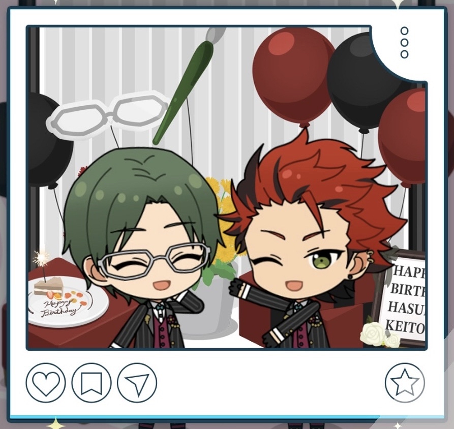
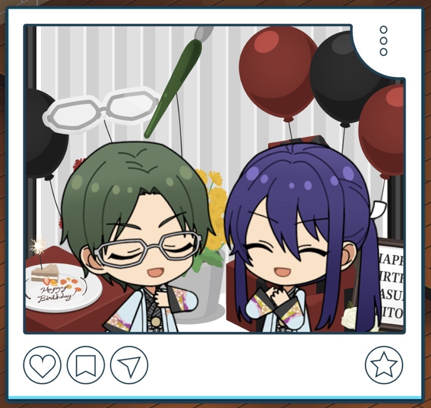
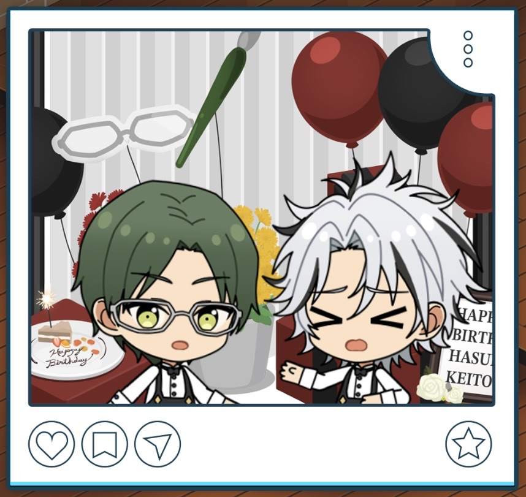
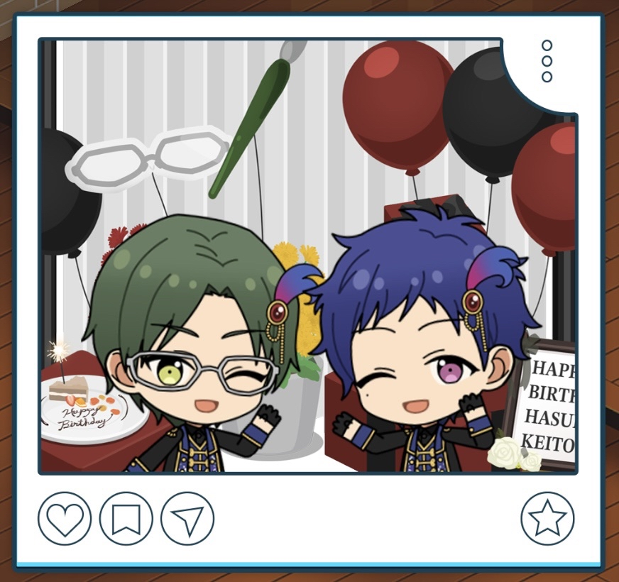

(2026) Keito Hasumi Birthday

| Day 1 | Day 2 | Day 3 |
|---|---|---|
It's a delight having you come celebrate my birthday. Thank you. I'll keep working towards improving myself. | It's a delight having you come celebrate my birthday. Thank you. I'll keep working towards improving myself. | It's a delight having you come celebrate my birthday. Thank you. I'll keep working towards improving myself. |
Before the Stream

Ahh, Anzu? What is it? You wanted to talk to me about something?
"Did you buy yourself anything for your birthday?" I could swear Sakuma asked me the same thing a second ago...
Ah, well. I bought a few books I'd had my eye on, but that's about it.
I don't tend to celebrate myself, so... Kanzaki and the others treated me to a celebratory meal for my birthday.
Besides, the fans are looking forward to the stream I'm holding. I'd say if anything, wishing for more than that would just be greedy.
Starting the Birthday Live Stream

Thanks for coming to watch the stream. To be honest, I didn't think so many comments would come in.
No, I should say they're still coming in now. Things haven't been smooth sailing, but it makes me realize yet again that the path I've chosen isn't a mistake.
Now then. It wouldn't feel bad to keep talking and sharing my thoughts, but it'd be a problem if we ran out of time for all the questions and answers you took the time to send in.
So then, let's start the question segment. I'll do my best to make it something you all will enjoy.
During the Birthday Live Stream 1
Selecting "We'll keep rooting you on!"
That reminds me. Looking through the comments, there seem to be a lot of questions about temples and about glasses, not just my idol work.
There are some in here that are touching on things I said in lives a few years ago, huh. I'm really grateful for the fact that you're still watching over me even now.
Hm? “We’ll keep rooting you on!” hm...?
Thank you. I’ll strive to be an idol people want to keep supporting, and one that makes them feel glad they did.
During the Birthday Live Stream 2
Selecting "I've been looking forward to Keito-san's stream."

Anyways. So the next request is this one... Hm? “I’ve been looking forward to Keito-san’s livestream”...?
And then... There’s a comment that says, “I got my assignments and work done ahead of time today just for this.”
It’s wonderful getting things done earlier than you have to. And what’s more, to do so for me— I couldn’t possibly be happier.
But, you don’t need to push yourself for the sake of watching the stream. I’d feel awful if you wore yourself out and couldn’t watch it.
I intend to do more streams in the future too. So, please take it easy.
Birthday Quiz
 | Below is the quiz questions in dropdown format. Click each dropdown below to reveal the answers to each question. Hiragana or katakana is included in typing-required questions to help you with your quiz! |
Which of these vehicles can Madara drive?
Helicopter • Ferry • Tank Truck • Bullet Train
The correct answer is: HelicopterOffice Conversations
| Polaroid | Office Line |
|---|---|
 | It’s a delight being celebrated. Don’t be so stiff ‘n formal, at least for today. |
 | This is a photo I'll always remember. I am deeply pleased to hear you say that. |
 | Would it have been better if I smiled more? You’re serious even on your birthday, Hasumi-san! |
 | To think, you remembered my birthday... I owe you quite a lot, after all. |